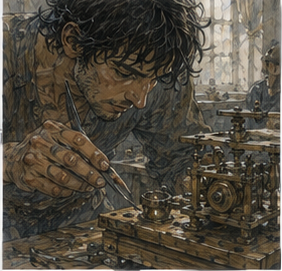
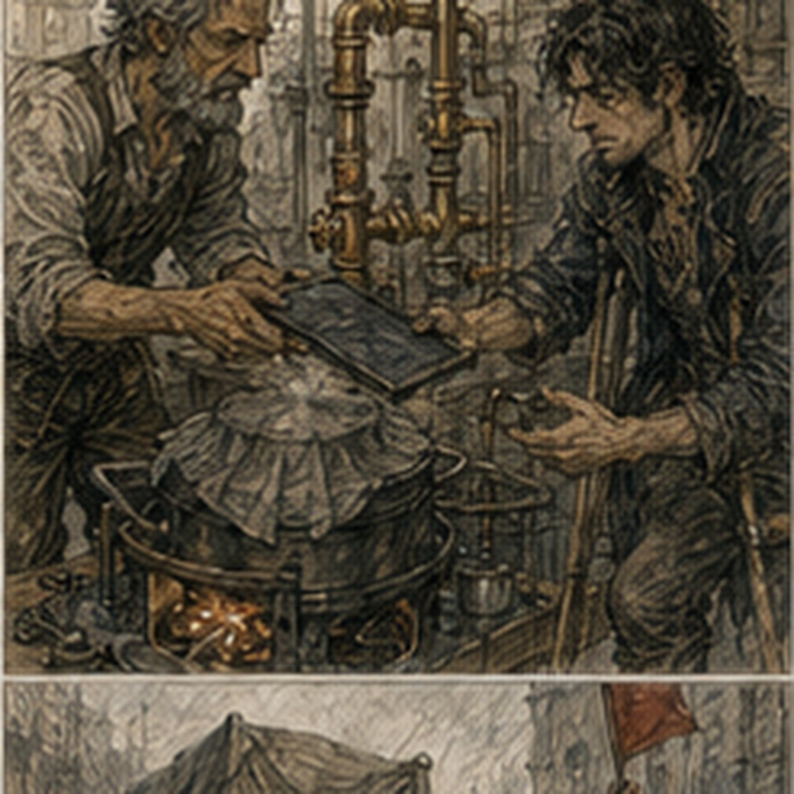

I arrived at Pell's at the second bell. The door was already open. That meant Pell was working. It did not mean he was waiting for me. Better distinction. Vessa was outside with a bucket of broken ceramic. She saw me.
“You're early.”
“Second bell.”
“Exactly.”
I looked at the sun. Then at her.
“That's not how bells work.”
“It is when Pell forgets the first one.”
From inside, Pell shouted, “I did not forget it.” Vessa kept walking.
“Come in.”
The regulator was still on the bench. Good. Pell had changed the fixture again. The wooden vibration frame was gone. In its place was a low iron bracket bolted to a stone-topped bench. The regulator sat inside two curved clamps. Not tight. Spring-loaded. I looked at it.
“You changed the support.”
“Had to.”
“Why?”
“Hot line.”
I nodded. That was apparently enough explanation for the moment. A narrow copper tube ran from the regulator toward a covered pot. The pot sat over a small enclosed burner. Heat. Actual heat. Pell handed me a slate.
“Record.”
“What?”
“Time. Temperature marks. Flow changes. Sound.”
“Temperature?”
He tapped the copper tube.
“Three marks.”
Not a thermometer. Marks. I looked at him. He shrugged.
“Good enough for today.”
Fair. Vessa set the broken ceramic beside the wall.
“Don't touch the burner.”
“I wasn't going to.”
“You were looking at it.”
“I look at things.”
“I know.”
Pell crouched by the regulator.
“Ready?”
“Yes.”
He lit the burner. The first change was nothing. That was useful. The metal warmed slowly. Water ran through the regulator. No vibration. Flow steady. I wrote the starting time. Pell watched the catch bowl. Vessa watched the clamp. I watched everything else. This was a bad way to run a test. So I picked one thing. The right clamp.
At about the fifth mark on Pell's temperature strip, the regulator made a faint click.

I looked up.
“Did you hear that?”
Pell stopped.
“Yes.”
Vessa touched the clamp.
“Don't.”
“I wasn't.”
She pulled her hand back. We waited. Another click. Then the flow changed. Barely. Pell looked at me.
“Record it.”
Already had. He shut the burner. The regulator cooled. The click came again. Different pitch. Interesting. Pell waited.
“Again.”
We did. Same sequence. Warm. Click. Small flutter. Cool. Click. No flutter. Not magic. Not a broken seal. Thermal movement. Probably. I wrote probably. Pell read over my shoulder.
“Why probably?”
“Because we don't know what moved.”
“The clamp.”
“Maybe.”
He smiled. Vessa said, “You two are going to start sleeping here.”
“No,” I said.
Pell said, “Not possible.” She pointed at both of us.
“Good.”
The third run started. This time Pell loosened the left clamp by one turn. He did not tell me why. I did not ask. He knew the fixture. We ran. The first click came later. No flutter. Second click. Still clean. Pell looked at the clamp. Then at me.
“Write it.”
I wrote.
“Difference?”
“Looser clamp.”
“Maybe.”
He nodded. We let it cool. Then he tightened it one turn past the first position. The regulator clicked sooner. Flutter appeared. Small. Repeatable. There. That was more interesting. Not because it solved anything. Because it was a relationship. Clamp pressure affected when the heated regulator changed behavior. Pell did not celebrate. He took the regulator apart. I watched.
“You're changing the whole fixture.”
“Yes.”
“Why?”
“Because if clamp pressure changes it, I need to know whether the body moves.”
I waited.
“That makes sense.”
He looked up.
“You sound disappointed.”
“I like when I'm right.”
“I know.”
Vessa came back with a cloth.
“You're both exhausting.”
Pell opened the regulator. The seal was intact. No obvious damage. He checked the seat. Clean. He checked the copper connection. Clean. Then he looked at the spring clamp. The contact surface had a bright worn line.
“That's new.”
I leaned closer. Vessa said, “Not touching.”
“I know.”
Pell rubbed the line with his thumb.
“Heat.”
“Or pressure.”
“Both.”
“Maybe the clamp is slipping.”
“Maybe.”
He reassembled it. This time he placed a thin leather washer between clamp and body. I stared.
“That will change the test.”
“Yes.”
“Why?”
“Because the customer uses leather.”
I looked at him.
“On the final mount?”
“Sometimes.”
Good. Not our experiment. Their product. We ran it again. The click came later. No visible flutter. At higher crank speed, the fixture vibrated. The regulator rattled. The output stayed stable. Pell stopped turning.
“Enough.”
I looked at the slate.
“Why?”
“Because I know the mount is doing something.”
He covered the burner.
“We don't need to break it to learn that.”

That was reasonable. I had been about to suggest another run. I kept my mouth shut. Vessa noticed. She smiled. Not kindly.
“Growth.”
“Don't.”
“I didn't say anything.”
“You said growth.”
“That's one word.”
I hated that she could do that. Pell was already writing.
“Current guidance?”
I looked at the slate.
“Heat changes clamp behavior. Clamp pressure changes onset of flutter. Leather interface reduces observed movement in this fixture. High vibration can produce rattle without immediate output instability.”
Pell nodded.
“Good.”
“Need more runs.”
“Yes.”
“Different regulator?”
“Yes.”
“Different clamp?”
“Yes.”
“Different heat?”
“Eventually.”
I looked at him.
“That's a lot.”
“That's work.”
Right. He handed me the slate.
“You can leave.”
That was not dismissal. It was permission. I packed my notebook. At the door, Vessa called after me.
“Greg.”
I turned.
“Your hand.”
I looked down. A blister had opened near the base of my thumb. Probably from the millrace work. I had forgotten it.
“You want me to look at that?”
I considered lying.
“No.”
“Good.”
She nodded toward the street.
“Go find food.”
“I was going to.”
“Before you start thinking.”
Too late. Outside, the city was already loud. A cart blocked half the lane while two men argued over whether the wheel had broken because of the load or because the axle had been repaired badly. Neither seemed interested in my opinion. Excellent. I walked around them. At the corner, I stopped. Varo Chemical was three streets south. The thought arrived. Kestrin.
Sorted. Processed. Sinkstone. I could go ask. I could spend the afternoon turning one answer into six. I stood there for several seconds. Then kept walking. Food first. There was a soup seller near the Guild yard. I bought a bowl. Not the cheapest. Not the expensive one. Middle. I sat on a low wall.
A man beside me was feeding bits of bread to a dog. The dog accepted every piece with the seriousness of a royal appointment. I watched it. Then watched the street. Then thought about the regulator. Not because I wanted to. Because the sequence was wrong. Heat. Clamp. Movement. Output. The sound came before the visible change. Maybe. I took out my notebook.
Wrote one line.
SOUND MAY PRECEDE OUTPUT CHANGE.
Under it:
CHECK WITH SECOND BODY.
Then closed it. That was enough. For now. A familiar voice came from behind me.
“You look like you're losing an argument.”
I turned. Jorren stood there with a paper-wrapped sausage in one hand.
“I am not.”
“You have the face.”
“What face?”
“The one where you stop hearing people.”
“I was eating.”
“You were staring at soup.”
I looked at the bowl. Fair. Jorren sat beside me.
“Work?”
“Pell.”
“Still doing that thing?”
“Yes.”
“How's it going?”
“Useful.”
He nodded. No demand for explanation. We ate. After a while he said, “Berren's foot is better.”
“Good.”
“He's complaining.”
“Better.”
“That's what I said.”
We ate a little longer. Then Jorren said, “Alden's gone south.” I looked at him.
“Again?”
“Farm escort.”
Right. I had forgotten. Or not forgotten. Failed to retrieve it.
“Anything happen?”
“Not that I heard.”
Good. Jorren tore off another piece of sausage.
“You sparring tomorrow?”
“If Hessa says.”
“That's not an answer.”
“It is the only answer.”
He grinned.
“Still you.”
I looked at him.
“Unfortunately.”
He laughed. The soup was getting cold. I ate it anyway. When we stood, Jorren nodded toward the Guild.
“Coming in?”
“No.”
“Why?”
“I have a blister.”
He looked at my hand.
“That serious?”
“Extremely.”
“Thought so.”
He left toward the yard. I went home. The regulator stayed at Pell's. The sinkstone stayed at Dorrin. Alden stayed south. Sevren stayed somewhere north. Everyone had somewhere else to be. I had food in my stomach. A test tomorrow. And a blister. For once, that was a complete enough list.